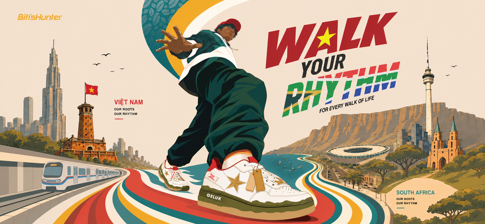
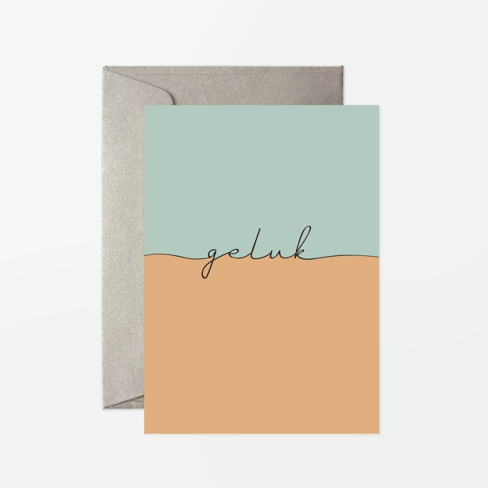
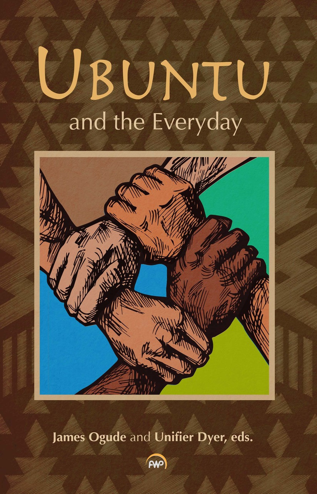
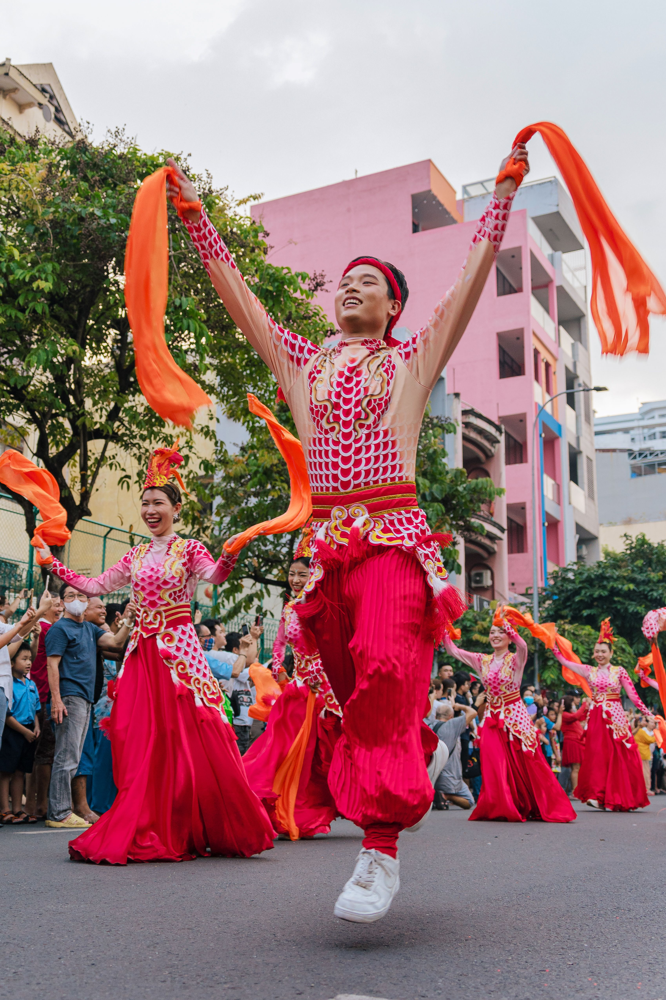

01. THE JOURNEY
The Journey
A STORY IN
MOTION
From the coffee highlands of Vietnam to the vibrant streets of South Africa. Different places, same rhythm.
Geluk
Roastery
Est.
Roastery
Est.
VNM
VIETNAM
ZAF
SOUTH AFRICA
FROM VIETNAM
TO SOUTH AFRICA
01
02
03
10,433 KM
Across the
Indian Ocean
Across the
Indian Ocean
04
05
06

Coffee Highlands
Where millions of coffee beans are grown, and thereby our story begins.


Coffee Grounds
What’s left behind can still create something amazing.


GroundStep Technology
Recycled coffee grounds turned into a high-performance inside.

Geluk
"Happiness".


Ubuntu
New streets to walk, new stories to live, still the same rhythm.


Cape Town Streets
New streets to walk. New stories to live. Same rhythm.




02. THE SHOES